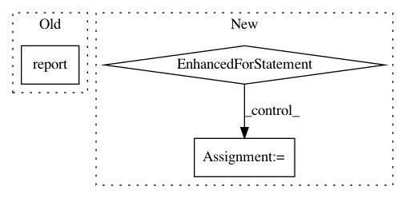

1b0348a9b65fabfb5d45534cfde25c504890a56f,chainercv/extensions/semantic_segmentation/semantic_segmentation_evaluator.py,SemanticSegmentationEvaluator,evaluate,#SemanticSegmentationEvaluator#,49
Before Change
with reporter.report_scope(observation):
for label_name, iou in zip(self.label_names, ious):
reporter.report({"{}/iou".format(label_name): iou}, target)
reporter.report({"miou": np.nanmean(ious)}, target)
return observation
After Change
report = {"miou": np.nanmean(iou)}
if self.label_names is not None:
for l, label_name in enumerate(self.label_names):
try:
report["iou/{:s}".format(label_name)] = iou[l]
except IndexError:
report["iou/{:s}".format(label_name)] = np.nan
observation = {}
with reporter.report_scope(observation):
reporter.report(report, target)
return observation
In pattern: SUPERPATTERN
Frequency: 3
Non-data size: 3
Instances
Project Name: chainer/chainercv
Commit Name: 1b0348a9b65fabfb5d45534cfde25c504890a56f
Time: 2017-06-06
Author: yuyuniitani@gmail.com
File Name: chainercv/extensions/semantic_segmentation/semantic_segmentation_evaluator.py
Class Name: SemanticSegmentationEvaluator
Method Name: evaluate
Project Name: ray-project/ray
Commit Name: b71c912da70e307ff1a9f07c7ca277a727306126
Time: 2020-07-05
Author: rliaw@berkeley.edu
File Name: python/ray/tune/examples/mlflow_example.py
Class Name:
Method Name: easy_objective
Project Name: chainer/chainercv
Commit Name: e69a1bf7a20467b10c096547e97923842ae71937
Time: 2017-06-02
Author: Hakuyume@users.noreply.github.com
File Name: chainercv/extensions/detection/detection_voc_ap_evaluator.py
Class Name: DetectionVOCAPEvaluator
Method Name: evaluate